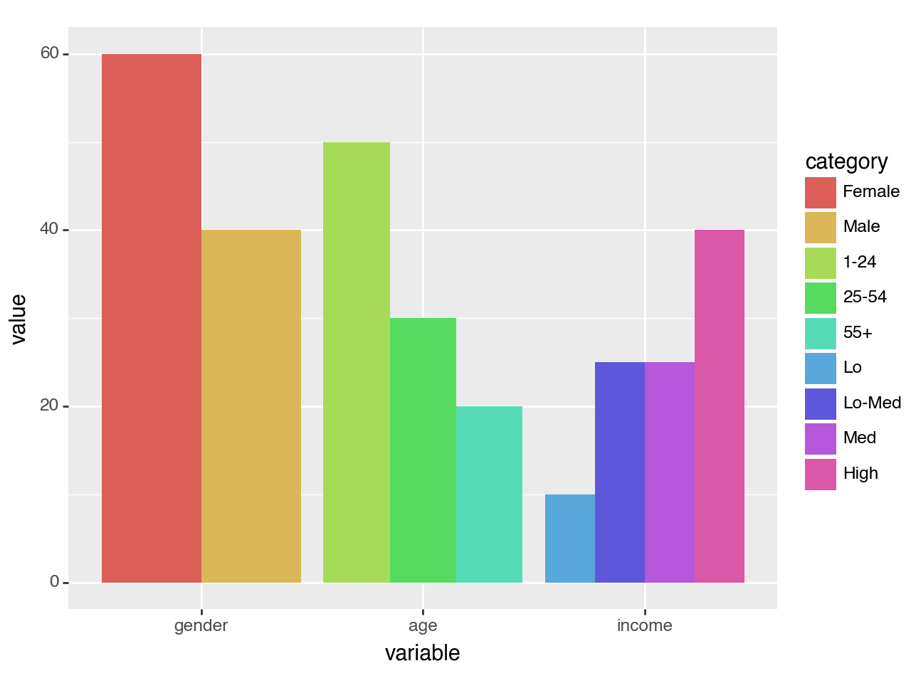

img = get_img('test_nbs/geom_col.ipynb', label='two_variable_bar_plot')
img
Note: this only works for png images. Other file types will not work at the moment.
get_img (nb_path, label='thumbnail')
Get image from notebook with a quarto cell directive with #|label: {label}
get_img allows you to get images from cells that contain a certain label. For example, consider the following cell in test_nbs/geom_col.ipynb:
#|label: two_variable_bar_plot
#|fig-cap: Two variable bar plot
(ggplot(df, aes(x='variable', y='value', fill='category'))
+ geom_col(stat='identity', position='dodge'))You can extract the plot from that notebook like this:
# test if you provide a label that doesn't exist
test_fail(get_img, contains='test_nbs/geom_col.ipynb does not contain a cell with `#|label: does_not_exist`',
args=('test_nbs/geom_col.ipynb', 'does_not_exist'))
# test if you label a cell that doesn't have a plot like a dataframe
test_fail(get_img, contains='test_nbs/geom_col.ipynb: cell with `#|label: no_plot` does not have an output type of `display_data`',
args=('test_nbs/geom_col.ipynb', 'no_plot'))
# make sure image is a PngImageFile
assert isinstance(img, Image.Image)The image above is too big! We can turn it into a thumbnail like so:
img2thumb (img:PIL.Image.Image, size=(260, 260))
Convert image to thumbnail.
nb2thumb (nb_path, label='thumbnail', size=(260, 260))
Extract thumbnail corresponding to the cell with the comment #|label: {label} from a notebook.
nb2thumb allows us to get a thumbnail directly from a notebook: